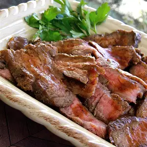

Beerbecue Beef Flank Steak

Description:
You know what I call a smokey flank steak during a
Friday night BBQ session? Heaven on Earth. Pick
up your own slice of heaven by following this
juicy recipe to wow your guests!
Ingredients:
- 1/4 cup molasses
- 1 (1 1/2 pound) trimmed beef flank stead
- 1/3 cup white vinegar
- 1/4 teaspoon ground caayenne pepper
- 1 teaspoon white sugar
- 1 teapsoon salt
- 1 cup strong beer
Steps:
- Pour ketchup, molasses, and white vinegar in a bowl;
add white sugar, 2 teaspoons black pepper, 1
teaspoon salt, cayenne pepper, cumin, allspice, and
cinnamon. Whisk until sauce is smooth. Pour in beer.
- Place flank steak into a non-reactive container; pour
sauce over meat. Poke at least 100 holes per side in
the flank steak using 2 forks.
- Cover container with plastic wrap and marinate beef 8
to 12 hours (up to overnight).
- Preheat an outdoor grill for high heat and lightly
oil the grate. Season flank steak with salt and black
pepper.
- Grill flank steak for 2 1/2 minutes; turn meat around
on grate to a 45-degree angle to make diamond grill
marks; grill for 2 1/2 more minutes. Repeat on second
side, turning meat 45 degrees after 2 1/2 minutes and
grilling 2 1/2 more minutes.
- Flip steak to original side and paint meat with
sauce. Continue to grill until sauce has glazed onto
the meat, about 30 seconds. Turn meat over and brush
other side with sauce. Sauce will burn if cooked too
long. Repeat 1 more time, brushing and glazing sauce
onto meat for about 30 seconds on each side. An
instant-read meat thermometer, inserted into the
thickest part of the flank steak, should read 125
degrees F (52 degrees C).
- Transfer steak to a platter and let rest 5 to 10
minutes before slicing lengthwise down the center;
cut each half across the grain into slices about 3/8
inch thick. Drizzle slices with more sauce to serve.